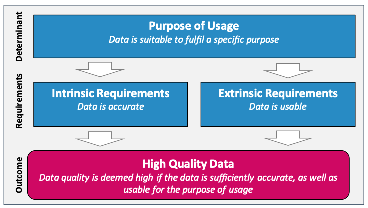
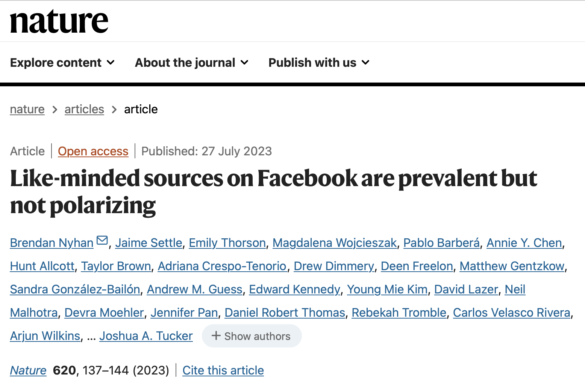

Seminar dates and topics |
||
|---|---|---|
| Date | Topics | Required reading |
30 October 2024 |
|
Sen, I., Flöck, F., Weller, K., Weiß, B., & Wagner, C. (2021). A Total Error Framework for Digital Traces of Human Behavior on Online Platforms. Public Opinion Quarterly, 85(S1), 399–422. |
6 November 2024 |
|
Chan, C.- Hong, Schatto-Eckrodt, T., & Gruber, J. (2024). What makes computational communication science (ir)reproducible? Computational Communication Research, 6(1). Nyhan, B., Settle, J., Thorson, E., Wojcieszak, M., Barberá, P., et al. (2023). Like-minded sources on Facebook are prevalent but not polarizing. Nature, 620(7972), 137–144. |
13 November 2024 |
|
Bauer, P. C., & Landesvatter, C. (2023). Writing a reproducible paper with RStudio and Quarto. OSF Preprint. |
20 November 2024 |
|
|
4 December 2024 |
|
|
Open Science and Reproducibility in CSS
University of Mannheim & GESIS – Leibniz Institute for the Social Sciences
2024-11-06
Agenda for today
Seminar evaluation and update on seminar logistics
LLMs, continued
Data quality in CSS
Open science and reproducibility in CSS
1. Evaluation
Let’s take 7 minutes for the evaluation
Please actively encourage your students to participate in the survey starting from November 4, and ideally allocate the necessary time for completing the online questionnaire during your class (taking a maximum of 5 to 7 minutes). The invitation link will be automatically sent to students by email on November 4.
Update on seminar logistics
Requirements for term paper
- Should be based on content/methods covered in the seminar: collection and analysis of DBD, use of CSS methods in R
- 3,500-5,000 words
- Submission deadline: 31 January 2025 (Prüfungsleistung/Examination)
- Fully reproducible code, including narrative comments where you explain what you do in each step
- You can share all materials, including data with me via https://cryptshare.gesis.org
Format of term paper
- Motivation and research question
- Concise theoretical overview: for what conceptual and theoretical reasons do I choose these data and methods?
- Research design
- Data and variables
- Method: no detailed mathematical description needed, but why does this method fit my research question and my data?
- Results
- Interpretation and conclusions
- Analysis code as an R script: needs to be fully reproducible
Criteria for grading seminar theses
Grading scheme |
|||||
|---|---|---|---|---|---|
| Very good | Good | Satisfactory | Insufficient | ||
Research question clear |
Research question fuzzy/unclear |
||||
Clear structure |
Fuzzy/unclear structure |
||||
Well-justfied theoretical foundations (and hypotheses) |
Missing link theory-analysis |
||||
Thorough review of state of research |
Thesis is not embedded in literature |
||||
Clear justification of data and method |
Unclear why data and method was used |
||||
Clear, logical analysis |
Unclear order and execution of analysis steps |
||||
Computational reproducibility |
Code is breaking and cannot be easily fixed |
||||
Clear style of writing |
Confusing writing |
||||
Bonus: sophisticated, demanding data analysis |
|||||
Presentations
- Short 5 minute elevator pitch of your ideas
- A structure with three slides could look like this
- Motivation, research question and theory
- Data source and data acquisition
- Current status / preliminary data collection / analysis
2. LLMs, continued
How do LLMs work?
OpenAI, Achiam, J., Adler, S., Agarwal, S., Ahmad, L., Akkaya, I., Aleman, F. L., Almeida, D., Altenschmidt, J., Altman, S., Anadkat, S., Avila, R., Babuschkin, I., Balaji, S., Balcom, V., Baltescu, P., Bao, H., Bavarian, M., Belgum, J., … Zoph, B. (2024). GPT-4 Technical Report.
Touvron, H., Lavril, T., Izacard, G., Martinet, X., Lachaux, M.-A., Lacroix, T., Rozière, B., Goyal, N., Hambro, E., Azhar, F., Rodriguez, A., Joulin, A., Grave, E., & Lample, G. (2023). LLaMA: Open and Efficient Foundation Language Models.
How do LLMs handle images?
- Scraping web images and their captions
- Extracting image features and comparing the patterns of occurence across images
- Using textual captions as image labels
Ramesh, A., Dhariwal, P., Nichol, A., Chu, C., & Chen, M. (2022). Hierarchical Text-Conditional Image Generation with CLIP Latents. OpenAI.
DALL·E 3
Betker, J., Goh, G., Jing, L., Brooks, T., Wang, J., Li, L., Ouyang, L., Zhuang, J., Lee, J., Guo, Y., Manassra, W., Dhariwal, P., Chu, C., & Jiao, Y. (2023). Improving image generation with better captions. OpenAI.
Validation of text analysis, continued
Gründl, J. (2022). Populist ideas on social media: A dictionary-based measurement of populist communication. New Media & Society, 24(6), 1481–1499.
Model validation in R
Go to file 7_class_eight.R in https://sebastianstier.com/ma_css24-25/material.html
3. Data quality in CSS
Data quality
What are relevant dimensions of data quality?
How do you assess data quality in your research?
How do you ensure data quality in your research?
Data quality: relevant dimensions
Birkenmaier, L., … Ziaja, S. (2024). Defining and Evaluating Data Quality for the Social Sciences: Position Paper. GESIS Papers.
What is a measurement?
A measurement is the process of linking an abstract concept to empirical indicators
A measurement is typically an inference since we almost never observe “all data” perfectly. We use measurements to draw inferences based on incomplete/sampled data
Drawing inferences: social sciences
Drawing inferences: CSS
Theory and causal mechanisms
Applications to election prediction
Tumasjan, A., Sprenger, T. O., Sandner, P. G., & Welpe, I. M. (2010). Predicting elections with Twitter: What 140 characters reveal about political sentiment. In: Proceedings of the 4th International AAAI Conference on Weblogs and Social Media (pp. 178–185).
Jungherr, A., Jürgens, P., & Schoen, H. (2012). Why the Pirate Party Won the German Election of 2009 or The Trouble With Predictions. Social Science Computer Review, 30(2), 229–234.
The micro-macro link
Jungherr, A., Schoen, H., & Jürgens, P. (2016). The Mediation of Politics through Twitter: An Analysis of Messages posted during the Campaign for the German Federal Election 2013. Journal of Computer-Mediated Communication, 21(1), 50–68.
See also: Coleman, J. S. (1990). Foundations of social theory. Belknap Press of Harvard University Press.
An error framework perspective
Groves, R. M., & Lyberg, L. (2010). Total Survey Error: Past, Present, and Future. Public Opinion Quarterly, 74(5), 849–879.
An error framework for DBD
Sen, I., Flöck, F., Weller, K., Weiß, B., & Wagner, C. (2021). A Total Error Framework for Digital Traces of Human Behavior on Online Platforms. Public Opinion Quarterly, 85(S1), 399–422.
Error framework for DBD
- Can improve communication between different social science and CSS communities
- May help you to systematically reflect on the validity and reliability of your measurement
- But this framework is just a starting point! There are always research design and platform specific things to consider
3. Open science and reproducibility in CSS
Think-pair-share
- Discuss the literature for today with your neighbor (5 min.)
- Focus on their relation to open science and reproducibility
- Share and discuss your results with the full class
Required reading: one of the “Facebook papers”
González-Bailón, S., Lazer, D., Barberá, P., Zhang, M., Allcott, H., Brown, T., Crespo-Tenorio, A., Freelon, D., Gentzkow, M., Guess, A. M., Iyengar, S., Kim, Y. M., Malhotra, N., Moehler, D., Nyhan, B., Pan, J., Rivera, C. V., Settle, J., Thorson, E., … Tucker, J. A. (2023). Asymmetric ideological segregation in exposure to political news on Facebook. Science, 381(6656), 392–398.
What is reproducibility?
Defining reproducibility
A minimum standard on a spectrum of activities (“reproducibility spectrum”) for assessing the value or accuracy of scientific claims based on the original methods, data, and code. […] In some fields, this meaning is, instead, associated with the term “replicability” or “repeatability”.
Reproducibility ensures that research is transparent, verifiable, and trustworthy.
Studies have repeatedly shown suboptimal reproducibility of research in the social sciences (e.g. Chan, Schatto-Eckrodt, and Gruber 2024)
Motivations for reproducibility
Increasing the robustness and trustworthiness of your own research
Facilitating collaboration (through the use of common tools and standards)
Being kind to future you:
- Editing and reusing your own code (e.g., for a paper revision or a follow-up study)
- Easily being able to pick up a project after a break or finding and understanding things again after a longer time
The Turing Way definition

Computational reproducibility
There also are distinctions between different types (or components) of reproducibility. One type/component that is especially relevant for our course is “computational reproducibility”:
Ability to recreate the same results as the original study (including tables, figures, and quantitative findings), using the same input data, computational methods, and conditions of analysis. The availability of code and data facilitates computational reproducibility, as does preparation of these materials (annotating data, delineating software versions used, sharing computational environments, etc). Ideally, computational reproducibility should be achievable by another second researcher (or the original researcher, at a future time), using only a set of files and written instructions.
The state of affairs
Chan, C., Schatto-Eckrodt, T., & Gruber, J. B. (2024). What makes computational communication science (ir)reproducible? Computational Communication Research.
Tools & workflows
In our case, tools are programming languages, programs, and other pieces of software that we can use to make our research (more easily) reproducible.
Workflows are the ways in which we combine these tools to achieve our goal.
Choosing tools and establishing workflows are somewhat idiosyncratic processes that depend on…
the requirements of your project (methods, data types, …)
the availability of tools
your skills and knowledge
the preferences of collaborators
Reproducible research workflows
Being an open scientist means adopting a few straightforward research management practices, which lead to less error-prone, reproducible research workflows (Klein et al. 2018: 11)
Research management practices
There are quite a few practices that researchers can adopt to increase the reproducibility of their work.
- Using free and open source software (FOSS)
- Project-oriented workflow
- The tidyverse style guide
- Clear folder structures
- Naming things
Fully reproducible documents in R
Next session
Credit where credit is due
Today, I was drawing heavily on course material of my GESIS colleagues Arnim Bleier, Johannes Breuer David Schoch and Bernd Weiß. Their material is openly available on GitHub: